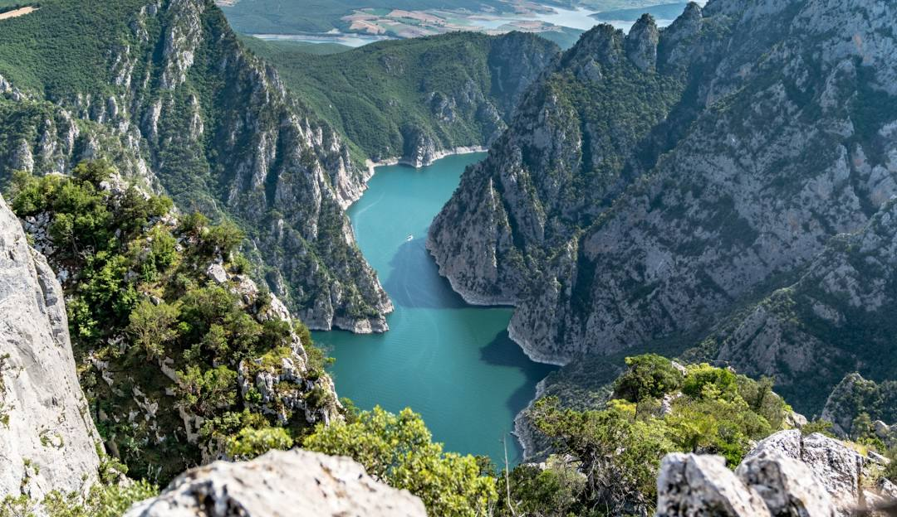
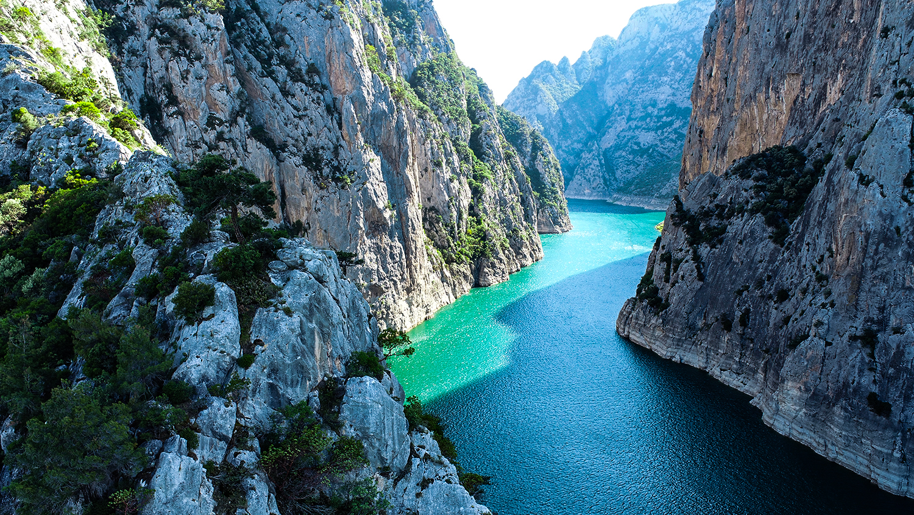
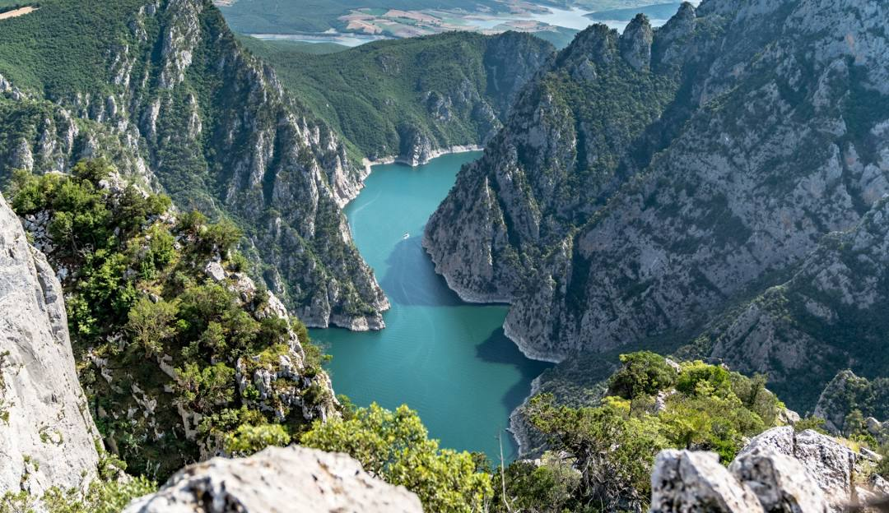
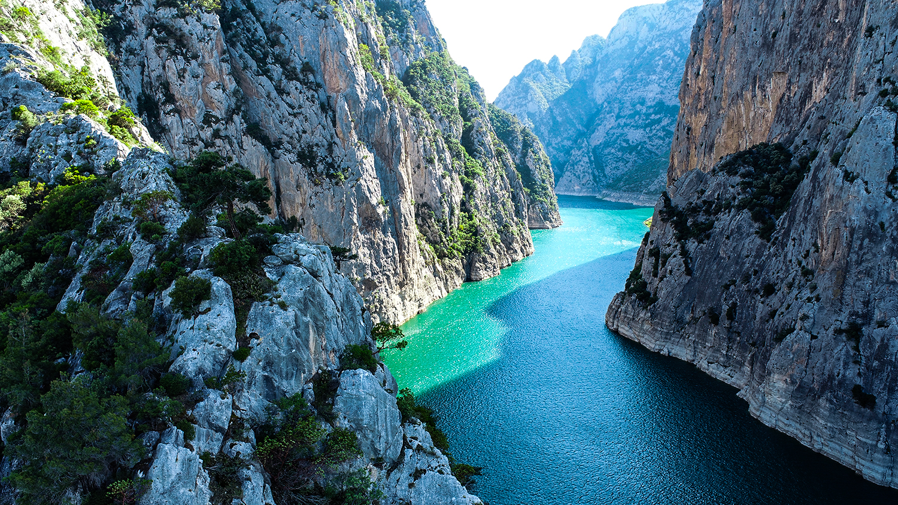

NEREYE GİDELİM?
.jpg) 



Kızılırmak üzerindeki en dar, en uzun geçit burası. Dağ oluşumu (Orojenez) ve akarsu aşındırması sonucu meydana gelen Şahinkaya Kanyonu 2,5 km uzunluğundadır. Vezirköprü İlçesi’nde Altınkaya Baraj Gölü’nde bulunan Şahinkaya Kanyonu, kente gelen yerli ve yabancı turistlerin ilgi odağı oldu. 3 bin 250 metre uzunluktaki kanyonda su derinliğinin ortalama 106 metre olduğu kanyon yüksekliğinin ise 340 metreye kadar çıktığı belirtildi. Çeltek köyü mevkii ve Şahinkaya kanyonu Kültür ve turizm Bakanlığı tarafından Turizm bölgesi ilan edildi. Kültür ve Turizm Bakanlığı 05/06/2011 tarihli Resmi Gazetede yayımlanarak yürürlülüğe girdi.
Vezirköprü’nün 17 km. kadar kuzeybatısında bulunan Kanyon (Yarmavadi), Altınkaya barajının en dar yeri olma özelliği ile de dikkat çeker ve yaklaşık 1500 metre uzunluğundadır. Vezirköprüde sadece Osmanlı ve Selçuklu değil, Hititlere kadar uzanan bir medeniyet geçmişinin izleri ve birikimleri var. Hitit Krallarının tahta çıkarken kutsandığı yer de Vezirköprüdedir. Şu an bu bölgede Alman arkeologlar kazı çalışmaları yapıyor. Dolayısıyla gerek Kunduz Dağı gerekse Şahinkaya Kanyonu gelecek yıllar içinde gerçekleşecek adımlarla hatırı sayılır bir çekim yeri olma yoluna girmiştir.
Kızılırmak Nehri, Sivas’ın İmranlı İlçesinde 3.000 metre yükseklikteki Kızıldağ’ dan doğar. Bir süre, geniş vadiler arasında bulduğu yolu izleyerek batıya doğru akar. Kayseri ve Nevşehir’ i geçtikten sonra Kırşehir dolaylarında kuzeye yönelen Kızılırmak 1.355 kilometrelik yolculuğun sonunda Samsun’ un Bafra İlçesinde denize döküleceği Karadeniz ile buluşur.
Hitit öncesi Anadolu Uygarlıklarından Luviler’in, günümüzden 4.000 yıl önce Puara (ulu ırmak/Su) dedikleri Kızılırmak, denize doğru sürdürdüğü yolculuğu sırasında, bünyesine aldığı kil, kum, toprak, çakıl gibi malzemeleri Kara Deniz’ e kadar itina ile taşımıştır.
Bu emeğin, bu sabrın ve özenin sonucunda, bereketiyle ün salmış Bafra Ovasını, birçok canlıya ev sahipliği yapan gölleri, sazlık-bataklık alanları, kumulları, su basar ormanlar gibi zengin yaşam alanlarını oluşturmuştur.
Yani, bugün hayatımıza zenginlik katan Kızılırmak Deltası sulak alan ekosistemi, bir akarsuyun, binlerce yıl boyu taşıdığı malzemelerle işleyerek dokuduğu, olağanüstü bir değerdir.
Samsun’un ilk parkıdır.
Cumhuriyet Meydanı’nın hemen yanı başında, Atatürk Anıtı’nı çevreleyen park, Samsun’un ilk parkıdır. Bu alan; çevre düzenlemesiyle, süs havuzları ve elbette Atatürk Anıtı’yla Samsun'a gelen ziyaretçilerin ilk durak noktasıdır.
Onur Anıtı
Samsun’un simgesi sayılan bronz Atatürk heykeli, Samsun halkı tarafından Avusturyalı heykeltıraş H. Kriphel’e yaptırıldı. Heykel bir Alman vapuruyla 15 Teşrinisani 1931 günü Samsun’a getirildi. Vapurdan çıkarılan heykelle birlikte H. Kriphel ve Mayer isimli Viyanalı bir mühendis de Samsun’a gelmişlerdi: Gazi Heykeli’nin açılma töreni 15 Kânunusani 1932 Cuma günü saat 14’te büyük bir kalabalığın katılımıyla gerçekleşti.
Samsun’un Onur Anıtı olan bu heykelin kaidesiz yüksekliği 4.75 metre, kaideli 8.85 metre. Büyük bir kaide üzerinde şahlanan bir at üstünde, Atatürk, bütün heybeti ile görülüyor. Gururlu bir anlatımla batıya ve çok uzaklara dikilen bakışları azim dolu. Şahlanan atın üzerinde dimdik bir vücut oturmakta.
Bu oturuşta bir korkusuzluk ve Türklüğün gücü ifade ediliyor. Sert çelik bir kol kılıca uzanmış. Kaidenin yanlarında iki kabartma ve öteki yanlarında da yazılar var. Kabartmanın birinde, iskelede sandalın yanında mermi ve cephane taşıyan insanlar görülmekte. Arkalarında, bir de top arabasının bulunması, savaş anını canlandırdığını gösterir. Diğer kabartmanın ortasında Atatürk, tüm özellikleri ile dimdik, büyük bir zafer simgesi olarak durmakta.
Başı halka dönük ve halk ile el ele. Çevresi Türk Ulusu’nun yaşlısı, köylüsü, kentlisi ile dolu. Heykelin kaidesindeki yazılar ise şöyle: a) Vatanda Milli Mücadeleye başlamak için Gazi, 19 Mayıs 1919 tarihinde Samsun’a çıktı. b) Bu heykel, Samsun Vilayeti halkı tarafından 29 Birinci Teşrin 1931 tarihinde dikildi.
Bu bölgenin yaban hayat açısından en ilginç alanları ise ilkbaharda tabanı tamamen suyla kaplanan yaprak döker ormanlarıdır.Bu ormanlar günümüzde parçalanmış olmakla birlikte Yörükler Beldesi kuzeyinde kalan Galeriç ormanı henüz bütünlüğünü korumaktadır.
Kızılırmak Deltasında bulunan Galeriç ormanı, Ülkemizdeki nadir subasar ormanlardan birisidir. Biyolojik çeşitlilik bakımından oldukça zengin olan ormanda 35 ötücü kuş türü kuluçkaya yatmaktadır.
Bu bölgenin yaban hayat açısından en ilginç alanlan ise ilkbaharda tabanı tamamen suyla kaplanan yaprak döker ormanlarıdır. Bu ormanlar günümüzde parçalanmış olmakla birlikte Yörükler Beldesi kuzeyinde kalan Galeriç ormanı henüz bütünlüğünü korumaktadır.Kızılırmak Deltası barındırdığı kuş varlığı açısından çok büyük öneme sahiptir. Bu anlamda deltanın varlığı ülkemize uluslararası platformda prestij sağlayacağı gibi, doğa turizmi,çevre eğitimi, bilimsel araştırma vb. gibi konularda çok büyük bir potansiyeli oluşturmaktadır.
2004 yılında başlatılan kurtarma kazılarıyla birlikte Baruthane Tümülüsleri olarak adlandırılan iki yığma tepenin altından mezarlar ortaya çıkarılmıştır. Baruthane Tümülüslerinin Mitridates sülalesinin hüküm sürdüğü Helenistik Dönem’de yapıldığı anlaşılmaktadır. Samsun Müzesi ile İstanbul Üniversitesi’nin birlikte yürüttüğü bilimsel kazıların sonunda iki ayrı mezar ortaya çıkarılarak ziyarete açılmıştır. İlkadım ilçesi Cedit Mahallesinde yapılan bir kurtarma kazısında Amisos Dönemi’ne ait bir aile mezarı ve bu aileye ait hazine ortaya çıkarılmıştır. Mezardan çıkarılan buluntular, Samsun Arkeoloji ve Etnografya Müzesi’nin en değerli koleksiyonlarından birini oluşturmaktadır. Amisos'ta nasıl bir yaşam zenginliği olduğunu da gösteren bu altın ziynet eşyaları (ölü armağanları), çanak-çömlek, cam ve mermerden yapılmış arkeolojik eserlerin incelemesinde, erkek mezarının krallığın en üst düzeydeki yöneticilerinden birine, diğer mezarların da bu kişinin eşi ve kızına ait olduğu düşünülmektedir. Mezarda bulunan toprak, cam, metal ve mermer eserler M.Ö. 4. yüzyıla tarihlenmiştir. Tümülüsler ve mezarlar çökme tehlikesi nedeniyle ziyarete kapalıdır, ancak teleferikle de ulaşılabilen bölgede belediyeye ait bir hediyelik eşya merkezi ve lokantalar bulunmaktadır.
İlkadım ve Canik'le beraber 3 merkez ilçeden biri olan Atakum'un nüfusu 2018 itibariyle 202.618'dir. Orta ve Doğu Karadeniz bölgesinin en uzun sahil plaj alanına sahip olan Atakum özellikle yaz aylarında il dışından gelen günübirlikçilerle beraber tam bir turizm merkezi haline dönüşmektedir. Tuik verilerine göre ilçe 2016 yılında Türkiye'nin nüfusu en çok artan ilçeler sıralamasında 16. konumdaydı. İlçe golf sahasından, plaj voleyboluna, bisiklet yollarından yürüyüş yollarına bir çok alternatife ev sahipliği yapmaktadır.